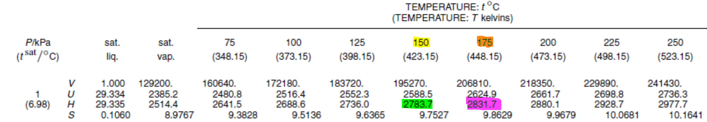

In the steam table below they are the values you would use if you wanted to find the enthalpy at 1kPa of Pressure, and any temperature value between 150 and 175 degrees C
The value you are looking at (in the example this would be a Temperature inbetween 150 and 175):
the yellow value:
the orange value:
the green value:
the pink value: